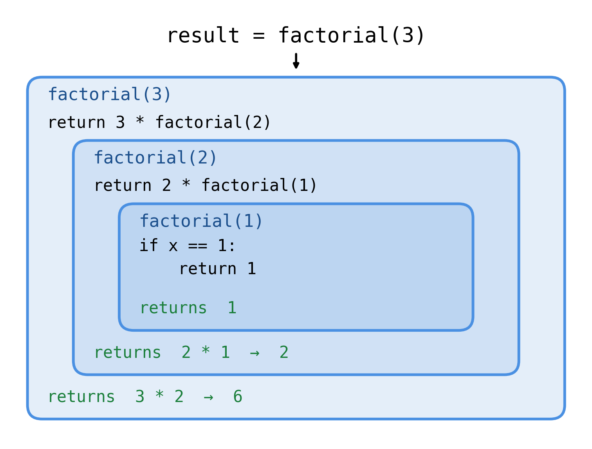
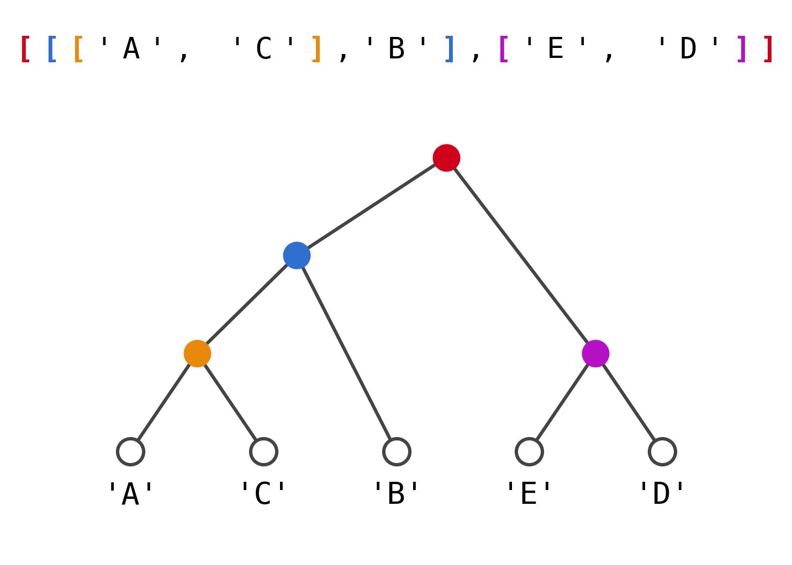
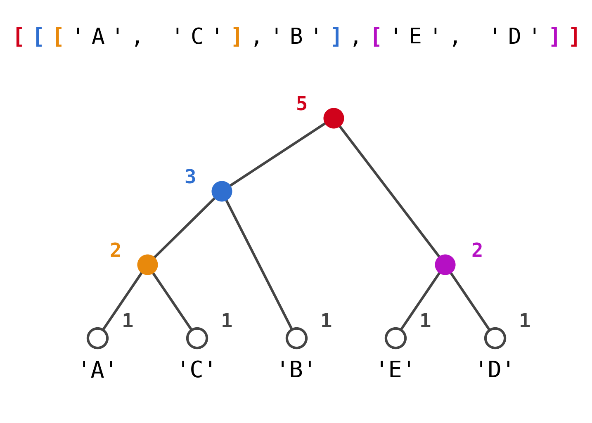
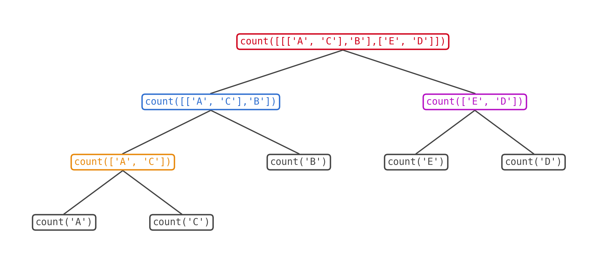

import sandbox_widget
import codelens_widget57 Recursion

A function that calls itself sounds like a joke or a disaster. It is neither. It is the sharpest tool in this book, and learning it will teach you what a function really is.
What happens when you call a function
Before we do anything alarming, let us go back over something you already know. Read this and run it:
%%sandbox
def greeting(name):
salute = "Hello"
return salute + " " + name
message = greeting("Mogens")
print(message)Now walk through it one line at a time, top to bottom:
- Python reads
def greeting(name):and the indented block under it. It does not run them. It just remembers that there is a function calledgreeting, and what its body looks like. - Python reaches
message = greeting("Mogens"). Now it runs the body — a temporary little world springs into being, withnameholding"Mogens"and, a line later,saluteholding"Hello". - The
returnhands back"Hello Mogens", and the whole expressiongreeting("Mogens")is substituted for that string. The temporary world evaporates.nameandsaluteare gone. messageis assigned"Hello Mogens".
Nothing new there. But notice how much of it you are now taking for granted: that the body is a template, not a thing that runs when you write it; that calling it creates a fresh little world every single time; that the world is thrown away when the function returns.
Hold on to those three facts. They are all you need for what follows.
Recursion
Apparently complicated problems can often be solved recursively, if the whole problem can be split into smaller problems of exactly the same kind.
That is the whole idea. Read it again, because the important word is identical. Not “smaller problems”. Smaller problems of the same kind, so that whatever solves the big one also solves the small ones.
And if the same thing solves both, you only have to write it once — and then have it call itself.
Factorial
Here is the classic example. The factorial of 4, written \(4!\), is
\[4 \times 3 \times 2 \times 1\]
Look at that product and squint. Inside it, tucked at the right, sits \(3 \times 2 \times 1\), which is \(3!\). And inside that sits \(2 \times 1\), which is \(2!\). So:
\[4! = 4 \times 3!\]
which is the same as saying that if you already knew the factorial of 3, computing the factorial of 4 would be one multiplication of work. And you would know the factorial of 3 if you knew the factorial of 2. And so on.
Two lines describe the whole thing:
\[\text{Recursion:} \quad f(x) = x \times f(x-1)\]
\[\text{Basis:} \quad f(1) = 1\]
The first line says how to make the problem smaller. The second says when to stop. You need both. The first one alone is a machine for making ever-smaller problems that never actually get solved; it is the basis that eventually gives a real answer for the whole tower of calls to be built on.
| \(x\) | \(x!\) |
|---|---|
| 1 | 1 |
| 2 | 2 |
| 3 | 6 |
| 4 | 24 |
| 5 | 120 |
| 6 | 720 |
| 7 | 5040 |
| 8 | 40320 |
| 9 | 362880 |
| 10 | 3628800 |
| 11 | 39916800 |
| 12 | 479001600 |
| 13 | 6227020800 |
| 14 | 87178291200 |
| 15 | 1307674368000 |
| 16 | 20922789888000 |
| 17 | 355687428096000 |
| 18 | 6402373705728000 |
| 19 | 121645100408832000 |
| 20 | 2432902008176640000 |
Exercise 57-1
Write a Python function called factorial that takes one argument and computes the factorial recursively. You have everything you need: def, if, return, and the two lines of maths above. The table in the margin is there so you can check yourself — start with factorial(4), where you know the answer must be 24.
Do this one yourself before you read on or ask anyone, human or otherwise. It is four lines long and it is the most valuable four lines you will write this term.
Here is one solution:
%%sandbox
def factorial(x):
if x == 1:
return 1
return x * factorial(x-1)Read it against the two lines of maths. The if is the basis. The last line is the recursion. There is nothing else in the function, and there is nothing else that needs to be there.
If your reaction to that last line is “but you cannot call factorial inside factorial, it is not finished yet” — good. That reaction is exactly what we are going to take apart.
Why it works
Go back to the three facts I asked you to hold on to.
A function definition is a template. When Python reads def factorial(x):, it does not run anything; it just remembers the body. So there is no problem writing a call to factorial inside the body — by the time that line actually runs, the definition is long finished.
And calling a function creates a fresh temporary world. So when factorial(3) reaches return x * factorial(x-1) and calls factorial(2), a brand new world appears, with its own x holding 2. The outer x is untouched. It is sitting there, patiently, waiting for its multiplication to finish.
Figure 57.1 shows all of it at once for factorial(3). Each box is one call, one temporary world, with its own x.

factorial, one inside the next. Each box is a temporary world with its own x. The innermost one hits the basis and returns a real number, and then the answers are multiplied on the way back out.
Follow it downwards first. factorial(3) cannot return until it knows factorial(2). factorial(2) cannot return until it knows factorial(1). And factorial(1) does not need anybody: x == 1 is True, so it returns 1 straight away.
Now follow it back up, and read it as pure reduction, the way you have been reading expressions since Chapter 14. In the middle box, factorial(1) is substituted for 1, so return 2 * factorial(1) becomes return 2 * 1, which reduces to 2. In the outer box, factorial(2) is substituted for 2, so return 3 * factorial(2) becomes return 3 * 2, which reduces to 6.
Substitution and reduction. That is all recursion is. You already knew how to do this.
Exercise 57-2
Add a print to the top of the function so you can watch the worlds being created:
%%sandbox
def factorial(x):
print("starting factorial({})".format(x))
if x == 1:
return 1
return x * factorial(x-1)
print(factorial(4))Before you run it: how many lines will be printed, and in what order will they appear relative to the final answer? Decide, then run.
Exercise 57-3
Now watch them close down again. Predict the entire output of this, in order, before you run it:
%%codelens
def factorial(x):
print("entering factorial({})".format(x))
if x == 1:
print("basis: returning 1")
return 1
result = x * factorial(x-1)
print("factorial({}) returns {}".format(x, result))
return result
print(factorial(4))If your prediction was wrong, do not just re-read the output until it looks reasonable. Draw the boxes of Figure 57.1 for factorial(4) on paper and walk through them with your finger.
Exercise 57-4
Try this:
%%sandbox
def factorial(x):
if x == 1:
return 1
return x * factorial(x-1)
print(factorial(100))and then this:
%%sandbox
def factorial(x):
if x == 1:
return 1
return x * factorial(x-1)
print(factorial(1000))One of them prints an absurdly long number. The other one does not print anything at all; instead you get an error you have not seen before. Read it. Python is telling you that there is a limit to how deep this can go — each of those temporary worlds takes up room, and Python refuses to stack up more than about a thousand of them.
That limit is not a flaw. It is a smoke alarm. A recursion that runs away is one of the easiest bugs to write, and this is Python catching it for you.
Exercise 57-5
ImportantSpot the bug
The factorial above is deliberately fragile. It is not a typo; it is a missing case.
What do you think factorial(0) does? Decide first. Then run it, and explain the error you get in terms of the basis case. Then fix the function so that factorial(0) returns 1, which is what mathematicians have agreed \(0!\) should be. There is more than one way to fix it, and they are all one character or one line.
Divide and conquer
Factorial is the traditional first example, but it is a slightly dishonest one, because a for-loop would have done the job just as well. Here is a problem where a loop will not save you.
A tree is one of those things you can only really describe in terms of itself. Look at Figure 57.2. At the very top sits a node. It has two things hanging under it. Each of those is either a leaf — the end of the line, with a name on it — or another node with two more things hanging under it.

In Python we can write a tree as nested lists. The tree in Figure 57.2 is:
%%sandbox
tree = [[['A', 'C'],'B'],['E', 'D']]Take a moment with the colors in the figure. Each pair of matching brackets in the nested list is one node in the drawing, and the colors pair them up. The red brackets are the outermost list and the node at the top. Inside the red list are two things: the blue list and the magenta list — which is exactly what the drawing shows hanging under the red node.
Exercise 57-6
Look at the nested list and only the nested list, without looking at the drawing. Which two things are inside the blue list? Which two are inside the orange list? Then check yourself against Figure 57.2.
Exercise 57-7
Write the nested list for a tree where the top node has a leaf 'X' on the left and, on the right, a node with leaves 'Y' and 'Z'. Then draw it.
Counting the leaves
Now the question: how many leaves does a tree have?
You could try to write a loop. Go on, think about it for a minute. How many levels of nested loops would you need? The answer depends on how deep the tree is, and you do not know how deep the tree is, and even if you did, you would need to rewrite the program for every new tree. This is where loops run out.
Exercise 57-8
Answer these three questions on paper, before writing any code:
- How could you find the number of leaves on a tree using recursion?
- How can you split the problem into smaller problems of exactly the same kind?
- What is the basic case that has an obvious, immediate answer?
Look at Figure 57.3 if you get stuck. It shows the answer written next to every node: 1 at each leaf, and at every other node the sum of the two numbers below it.

Exercise 57-9
Write a function called count that takes a tree and returns the number of leaves on it. Test it on [[['A', 'C'],'B'],['E', 'D']], where you know from Figure 57.3 that the answer must be 5.
One hint, and it is the only one you get. You need to be able to tell a leaf from a node. A leaf is a string and a node is a list, so you can test for it like this:
if type(tree) is str:
# what to do when it is a leaf...Here is one solution:
%%sandbox
def count(tree):
if type(tree) is str:
return 1
return count(tree[0]) + count(tree[1])
tree = [[['A', 'C'],'B'],['E', 'D']]
print(count(tree))Three lines. Compare them with the three questions you answered on paper: the if is the basic case, and the last line is the split into two identical smaller problems.
Notice that the last line calls count twice. There is no rule that a recursive function may only call itself once, and this is what makes recursion so much more powerful than a loop here. Each call branches into two more, and the branching follows the shape of the tree without you ever having to know how deep it goes.
Figure 57.4 shows every call that happens when you run it. The colors match Figure 57.2: each call gets exactly the part of the tree that its node is responsible for.

count on the example tree. The call tree has the same shape as the tree itself.
That is the thing worth staring at. You did not write the shape of that diagram. The tree did. Your function only ever described what to do at one node, and the shape came out of the data.
Exercise 57-10
Predict what happens with each of these, then run them:
%%sandbox
def count(tree):
if type(tree) is str:
return 1
return count(tree[0]) + count(tree[1])
print(count('A'))
print(count(['A', 'B']))
print(count([['A', 'B'], ['C', 'D']]))The first one is worth a moment’s thought. Is a single leaf a tree?
Exercise 57-11
Add a print to count so it announces every call, like this:
%%sandbox
def count(tree):
print("count({})".format(tree))
if type(tree) is str:
return 1
return count(tree[0]) + count(tree[1])
print(count([[['A', 'C'],'B'],['E', 'D']]))Run it and compare the printed lines with Figure 57.4. Do they come out in the order you expected? Which call finishes first, and which finishes last?
Exercise 57-12
Open the assistant in the browser, give it the count function and the tree, and ask it to list every call that gets made, in the order they are made. Do not run anything yet. Write its answer down.
Now run the version with the print in it and compare, line for line. Assistants are good at recursion in general and surprisingly slippery about the exact order of calls in a particular one. Where did it agree with the machine, and where did it not?
Put the result in your logbook. This is the rule of the whole course in one exercise: the assistant predicts, the machine proves.
Exercise 57-13
Write a function that returns a list of all the leaves on a tree, rather than the number of them. On the example tree it should return ['A', 'C', 'B', 'E', 'D'].
The same hint applies for telling a leaf from a node. And one more: count returned a number and added the two results together with +. Your function returns a list. What does + do to two lists?
Exercise 57-14
Write a function that returns the depth of a tree — the number of steps from the top node down to the deepest leaf. A single leaf has depth 0. On the example tree the answer is 3.
You will need the built-in function max, which takes two numbers and returns the larger of them. Predict the answer for ['A', 'B'] before you run anything.
What you learned
Recursion is not a special feature of Python. There is no recursive keyword. It is nothing more than a function calling a function, which you have done a hundred times — it just happens that the function it calls is itself.
Which is why recursion is such a good test of whether you really understand functions. If a recursive call looks impossible to you, it is because some part of you still thinks that a function is one thing that happens once. It is not. A definition is a template, and every call builds a fresh temporary world from that template, and every one of those worlds has its own variables and its own patiently-waiting half-finished expressions. Recursion only works because that is true, and once you have watched it work, you will never doubt it again.
NoteLogbook
This week, record what the assistant got right and wrong about the order of the calls in Figure 57.4, and how you found out. If you also asked it to write a recursive function for you, note whether it remembered the basis case — that is the one they most often get wrong, and it is the one that turns a program into an error message.